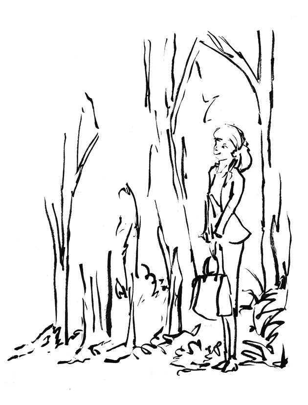
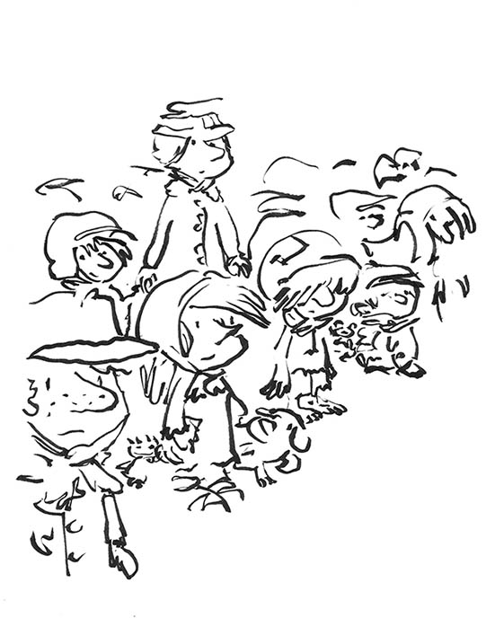
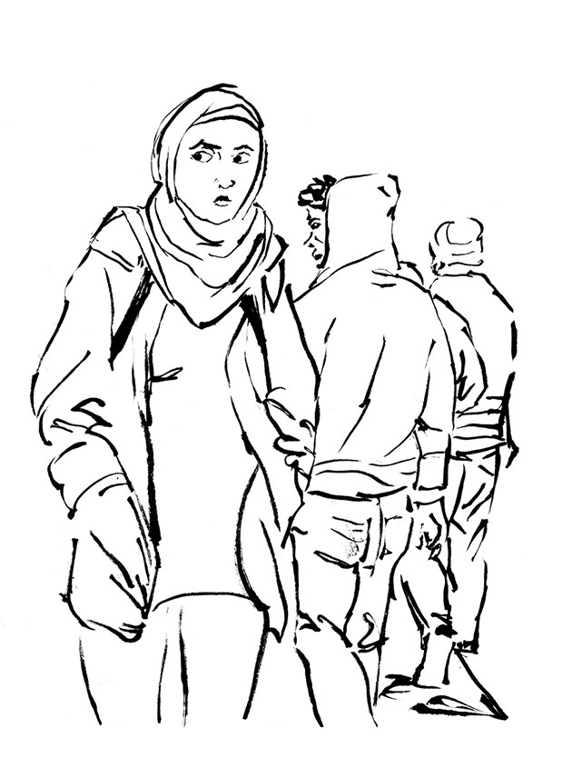
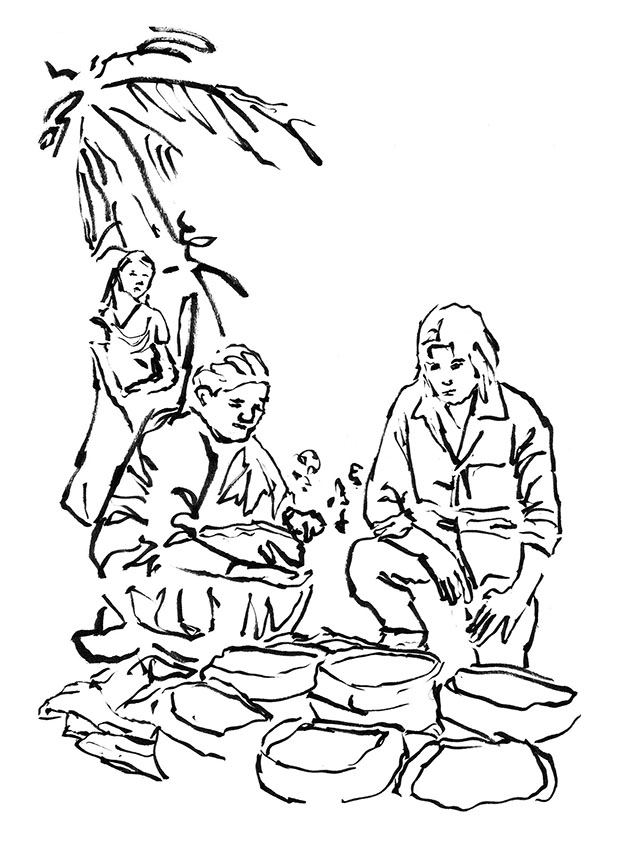
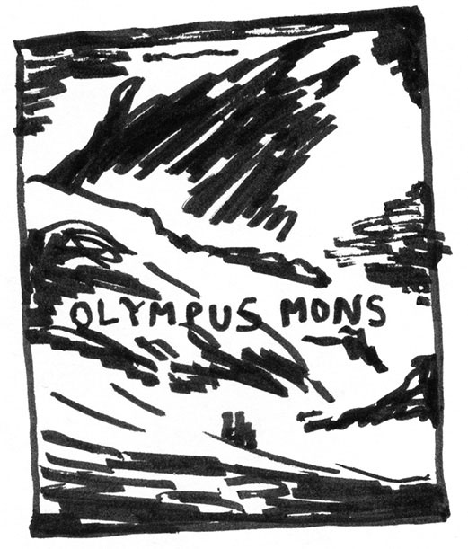
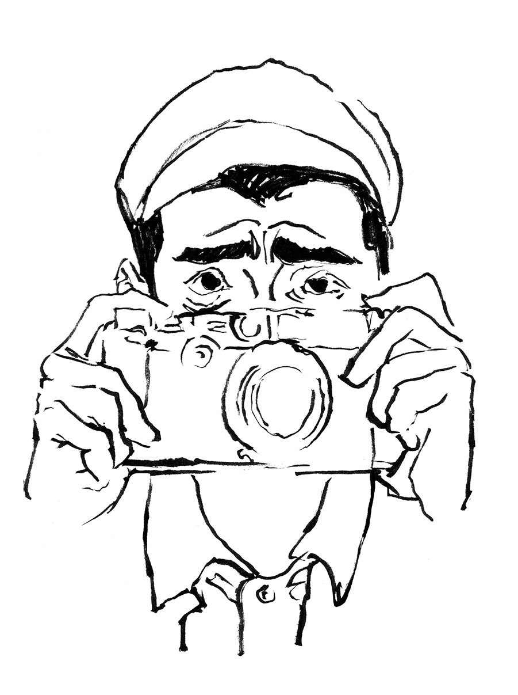

Geneviève Maubille – entretien et sélection
Diplômée en traduction, enseigne la traduction de l’espagnol vers le français à la Louvain School of Translation and Interpreting (Université catholique de Louvain) et à la Faculté de traduction et interprétation Marie Haps, Bruxelles.
Traductrice des bandes dessinées publiées aux éditions Dargaud Benelux, Dargaud France, Le Lombard et Le Long Bec.
LT : Pour commencer, comment est-ce que l’on devient traductrice BD ? Quel est votre parcours ?
GM : C’est tout à fait par hasard en fait ! C’était en 2007 ou 2008 que j’ai rencontré une ancienne étudiante de traduction devant Marie Haps qui est maintenant assistante éditoriale chez Dargaud, qui est même devenue éditrice l’année passée je pense. On discutait, moi qui adore la BD depuis toujours, je lui disais qu’elle avait de la chance et puis elle m’a recontactée un jour pour passer un test de traduction comme elle savait que j’étais intéressée. J’ai donc passé le test de traduction qui a satisfait et voilà. Ça a commencé comme ça. Mon ancienne étudiante est donc devenue ma cliente et c’est elle qui me juge maintenant. C’était un heureux hasard que je n’aurais jamais imaginé.
LT : Est-ce qu’il y a des contraintes et des enjeux différents avec la traduction de BDs ? Parce qu’ici, il n’est plus question de juste traduire le texte, il est aussi question de traduire l’image. Il y a aussi la contrainte de l’espace du phylactère, j’imagine ?
GM : Oui, alors disons que la contrainte de l’espace, elle est présente uniquement quand une maison d’édition rachète une BD qui est déjà sortie. Imaginons qu’ils rachètent les droits d’une BD qui est sortie en Espagne, alors là, tout est déjà prévu. La taille des bulles, le lettrage qui sera peut-être reproduit à l’identique en français ou alors ils optent pour une autre typographie, ça dépend un peu. Alors là, il y a une contrainte d’espace. Généralement, moi, je travaille avec des auteurs qui ont passé un contrat avec des maisons d’éditions franco-belge, et ils attendent souvent d’avoir la traduction pour calibrer la taille de la bulle.
LT : Ok, c’est l’inverse de ce à quoi je m’attendais.
GM : C’est plutôt comme ça. Et donc on a aussi les cas extrêmes, parce que vous parliez de l’interaction image/texte, on a de plus en plus, et ça c’est très inconfortable pour le traducteur, c’est que je traduis à l’aveugle, donc je n’ai pas les dessins. Je dois traduire tout le dialogue, j’ai un descriptif de ce qui devrait se passer dans la case et tout ça, je traduis à l’aveugle sans avoir un seul dessin. Ça se passe quand, par exemple, le scénariste est hispanophone et le dessinateur est francophone. Ils ne se comprennent pas donc le dessinateur doit attendre ma traduction pour dessiner. C’est un peu comme sous-titrer un film sans voir le film. Mais bon ça, c’est le cas le plus désagréable que j’ai eu peut-être deux fois sur les trente que j’ai traduit mais la contrainte de l’espace, c’est uniquement si on rachète les droits d’une BD où là tout est déjà prévu. On ne peut plus rien modifier comme la taille de la bulle. La maison d’édition reçoit l’ouvrage terminé et ils vont juste gommer le texte et puis re-lettrer dedans. Tandis que les autres, comme c’est un contrat avec une maison d’édition belge, c’est le dessinateur qui va lettrer et qui va intégrer la traduction dans les phylactères et qui va éventuellement adapter. J’ai eu un cas, un jour où l’auteur a dit « Non je suis désolé, la traduction n’entre pas, il faut retravailler la traduction pour qu’elle rentre dans l’espace. ». Mais quand je traduis je ne pense jamais à ces contraintes parce qu’en fait, je livre un document Word avec les indications « bulle 1 », « bulle 2 ». C’est pas une entrave donc parce que je n’y pense pas. C’est parfois a posteriori que le dessinateur revient vers moi pour me dire qu’il faut faire des modifications parce que ça ne rentre pas ou bien c’est la maison d’édition qui décide de modifier pour que ça rentre dans le phylactère et que le texte ne soit pas trop serré. J’ai déjà vu une BD que j’ai traduite où on voyait qu’ils avaient réduit la taille de caractère pour faire rentrer le texte et ça ne va pas, ça se voit. On a l’impression que les lettres vont sortir du phylactère.
LT : C’est quoi le processus exact lors d’une traduction de BD ? Donc dans la majorité des cas on reçoit d’abord les dessins ?
GM : Oui, généralement c’est ça. Alors je ne dirais pas que ce sont les dessins définitifs. C’est souvent du noir et blanc mais déjà encré, etc. Parfois ce sont simplement des croquis aux crayons. Parfois, avec les dessinateurs qui travaillent vite, on a tout en couleur, parce que la couleur est importante. J’ai eu des cas où je ne savais pas si c’était le jour où la nuit. Et donc parfois quand je traduis en espagnol, ça peut vouloir dire « bonsoir » ou « bon après-midi » donc j’avais dû demander à l’auteur à quel moment de la journée ça se passait parce que je n’utiliserai pas les mêmes termes. Les couleurs m’auraient permise d’avoir la réponse tout de suite. Donc le cas le plus désagréable, c’est quand il n’y a pas du tout de dessin. Mais la plupart du temps je reçois les planches. Soit je reçois tout d’un coup, ça s’est plus confortable aussi, soit par morceaux. Donc je dois commencer à traduire et je livre la traduction puis je reçois la suite et je livre la suite. Ce sont des traductions définitives donc ce n’est pas super confortable parce que je n’ai pas toute l’histoire. Mais je demande un droit de regard sur la version finale. Dans ces conditions, je risque peut-être de mal traduire à un moment. J’aurais pu faire autrement si j’avais eu les dernières planches donc comme ça, je peux corriger certaines choses. Donc je reçois les planches et le scénario dans un Word. Je traduis dans le Word et je l’envoie. Les auteurs, les scénaristes, en général, je suis souvent en contact avec eux donc je leur envoie des questions si j’ai des doutes. Ils sont super gentils, tous. Idéalement je devrais avoir au moins deux mois pour traduire une BD. Ça c’est bien mais parfois c’est un mois, parfois c’est trois, parfois c’est un peu plus, ça dépend du planning de la maison d’édition.
LT : Oui j’imagine que tout se fait un peu en parallèle, non ? Ça doit dépendre des scénaristes.
GM : Oui, tout à fait. Donc une fois que j’ai vraiment fini la traduction, que j’estime que c’est définitif, je l’envoies à la maison d’édition qui l’envoie à une relectrice. Cette personne relit ma traduction mais cette personne ne connait pas la langue source, donc l’espagnol. Elle lit uniquement ma traduction en français. Elle suggère des modifications voire des corrections si jamais il y a une coquille qui reste ou quoi. Ça me revient à moi, comme cette relectrice ne maitrise pas l’espagnol, parfois elle intègre des erreurs de sens mais c’est normal comme elle travaille juste le français. En général elle a tout à fait raison sur les corrections où c’est bien mieux parce qu’elle n’a pas le nez dans le guidon comme moi. Elle a le recul que je n’ai pas. Et donc elle suggère beaucoup de choses que j’accepte ou que je n’accepte pas et je n’accepte pas quand ça implique une erreur de sens. Et ça je dois le préciser dans le suivi des modifications et je renvoies à l’éditeur et puis en général, chez Dargaud, ils m’envoient la version lettrée en PDF et ils me demandent une relecture pour vérifier parce qu’ils savent bien que j’aime bien voir le tout. Ils me le demandent et j’accepte volontier et puis c’est fini. Quelques mois après c’est publier.
LT : Dans la majorité des cas, c’est un lettreur qui s’occupe de mettre en page le texte ?
GM : Souvent, c’est le dessinateur qui s’occupe du lettrage, ou c’est lui qui choisi une typographie. Mais pour d’autres BDs, ils ont un lettreur. Je vois souvent le nom du lettreur apparaître, toujours le même et dans ce cas-là je ne sais pas vraiment comment ça se passe. Je sais que parfois il y a des réflexions sur les typographies qui passent dans les mails mais je n’interviens pas du tout. Moi je livre un Word en Calibri 11 ou Arial 12, et ils se débrouillent. Il y a eu une fois où j’ai vu une BD et je me suis dit qu’ils auraient du prendre une autre typo parce que c’était difficilement lisible mais moi je n’ai rien à dire là-dessus. Le lettrage donc c’est soit le dessinateur, soit un lettreur de la maison d’édition. Comme c’est dans un Word et tout est numéroté « planche 1, case 1, bulle 1 » et j’indique aussi le nom du personnage par contre si c’est un ouvrage qui a déjà été publié en Espagne et qu’ils essaient de racheter les droits, généralement, ce que je dois faire… Je reçois un exemplaire de l’ouvrage et je dois, au crayon, numéroter toutes les bulles et je dois renvoyer cet exemplaire à la maison d’édition qui le donne, je suppose, au lettreur parce que dans ces cas-là ça sera le travail de leur lettreur à eux. Comme ça il voit quel texte correspond a quelle bulle. C’est un peu fastidieux. Je n’ai travaillé que deux fois sur des BDs qui ont été rachetées. Sinon toutes les autres, ce sont des contrats passés avec des auteurs avec Dargaud ou Le Lombard. Donc ces BDs elles ne sont même pas publiées, du moins pas nécessairement en espagnol. C’est d’abord publié en français et puis en espagnol après. Le marché de la BD en Espagne ce n’est pas comme chez nous. Tous les auteurs veulent signer avec une maison d’édition franco-belge. Ici, j’ai un scénariste avec lequel j’ai beaucoup travaillé, qui m’envoie tous ses projets et il me demande de les traduire parce que pour le moment il n’a plus rien et il essaie de démarcher des maisons d’éditions et il leur envoie tous ses projets donc… il est content de m’avoir ! Il me dit toujours qu’il va d’abord frapper à la porte des grandes maisons d’éditions.
LT : À combien s’élève une traduction BD généralement ?
GM : Alors, on est payé à la planche. Les tarifs, ici, pour la Belgique, ça n’a pas bougé depuis que j’ai commencé en 2008, c’est 12, 5 euros la planche. Ça veut dire qu’une planche sans texte, je la facture quand même. Et s’il y a une planche qui est très dense, elle restera à 12, 5 euros. En fait, on regarde combien de pages a la BD et on facture chaque page. C’est justement mon ancienne étudiante à Dargaud qui m’a dit « Tu commences pas à enlever les planches où il n’y a pas de texte ! Tu fais pas ça hein ! ». Donc c’est en général ça, par contre, quand ce sont des romans graphiques, donc des one shot de cent planches ou plus de deux cents planches, ça sera plutôt un forfait. Chez Dargaud, ils font un forfait donc j’y perds. Chez Le Lombard j’ai déjà eu des romans graphiques mais là, ils me paient le nombre de planches. C’est du brut hein, en net c’est beaucoup moins. Je ne gagne pratiquement rien. Quand je facture 600 ou 700 euros j’ai à peine 200 euros sur mon compte parce que je passe par une boite de facturation. Mais je ne le fais pas pour ça. J’adore faire ça et je trouve que c’est un privilège de pouvoir allier une passion et mon métier. À côté de ces traductions je ne traduis pas, je suis enseignante donc je n’ai pas le temps. Donc ça me permet aussi de conserver une pratique et ça c’est bien ! J’ai déjà eu un hors-série à traduire, et donc là je facture au mot. Je pense que c’est 10 cents le mot, ce qu’on appelle le mot source mais ça vous connaissez mais sinon c’est à la planche. Je suis en contact avec une traductrice qui travaille en Suisse, qui fait une thèse de doctorat sur la traduction de la bande dessinée et elle m’a dit qu’en Suisse, ils étaient payés 4 euros la planche. Je l’ai jamais rencontrée, c’était par mail que je lui avais demandé sa thèse et elle me l’a envoyée bien gentiment. Elle m’a demandé les tarifs en Belgique et elle a dû être étonnée !
LT : Je me demandais aussi autre chose au niveau de la traduction de BDs, on voit de plus en plus souvent un travail de texte dans l’image. Les dessinateurs intègrent directement le texte dans le dessin, ici aussi il y a un travail de traduction ou...?
GM : Alors, ce sont souvent des onomatopées et en fait, je me rend compte que souvent elles restent les mêmes. Alors évidemment pour moi, c’est plus facile quand elles sont dans le document Word et que donc le scénariste les a mis dans le document. Là, je les traduis parce que je les vois mais j’avoue que parfois, comme je n’ai pas toujours le nez sur la planche, parce que je passe beaucoup de temps à travailler le français, c’est ça qui prend beaucoup de temps et là j’oublie même parfois le dessin parce que je travaille sur un texte ciblé. Et je me souviens qu’une fois une relectrice m’a dit qu’il y a une onomatopée qu’il aurait fallu adapter en français mais sinon elles restent souvent comme ça comme « Badaboum », « Broum ». Je pense que les dessinateurs même espagnols, comme ils savent qu’ils travaillent avec une maison d’édition franco-belge, ils adaptent déjà leurs onomatopées. Par contre il faut traduire effectivement tout ce qui apparaît à l’image. Par exemple, l’enseigne d’un restaurant, des choses comme ça, tout ça, il faut traduire. C’est pas dans les phylactères à proprement parler mais il faut le faire. Tout doit être traduit.
LT : Donc quand vous traduisez les BDs avant d’avoir les dessins, c’est un travail qui va devoir être fait par la suite ?
GM : Bonne question ! Alors là, je réfléchis, je pense que j’en avais eu deux ou trois comme ça. Je pense que la question ne s’était pas posée parce qu’il n’y avait pas eu de texte dans l’image. Je n’ai pas eu ce cas mais j’imagine que ça doit être fait a posteriori ou bien… Parce que quand on doit traduire des BDs à l’aveugle, on n’a pas que le dialogue. On a aussi la voix off et tout le descriptif de tout ce qu’il se passe dans chaque case. Tout ce qui est vocabulaire cinématographique sur l’échelle des plans est là aussi. Donc je dois traduire tout le descriptif de ce qu’il se passe aussi. Et donc si des personnages arrivent devant un restaurant, j’aurais traduit le nom dans le descriptif et le dessinateur pourra directement mettre la traduction. Toute cette partie-là aussi, au niveau du tarif, ils ne me paient pas plus cher pour ça. Pour cette partie descriptive, ça peut être une traduction littérale, on s’en fiche parce qu’elle n’est pas publiée mais elle doit être comprise donc il faut tout traduire. On est souvent le dernier maillon de la chaîne, quoique non parfois c’est vraiment en parallèle à la création comme vous l’avez dit tout à l’heure. À tel point que parfois je dis au scénariste que je suis désolée mais je ne comprends pas ce qu’il veut dire ! Un collègue m’a fait remarqué que quand on travaille comme ça, on se retrouve à participer au processus créatif en fait. Je ne l’avais pas du tout réalisé. C’est pour ça que j’avais choisi la traduction, c’est pour qu’on ne me voit pas donc c’est très bien comme ça.
LT : Voilà, ce sont toutes les questions que j’avais ! Vous pourrez m’envoyer votre sélection par mail ?
GM : Je vais vous envoyer ça ! J’en ai quelques unes en tête mais il faut que je vérifie les dates. Je vais regarder un peu pour ne pas prendre des romans graphiques trop prises de tête, tout ce qui est primé… Je trouve que parfois à Angoulême… Je vais à chaque fois vérifier les résultats mais quand je regarde les nommés, en général je n’ai rien lu ! Pourtant j’en lis énormément, j’ai beaucoup de BDs mais je suis plutôt mainstream moi. Ils me disaient, dans une maison d’édition, ils ont leurs gros succès et puis ils font des romans graphiques, des choses un peu différentes et ils savent très bien qu’ils ne vont pas gagner d’argent avec ça mais c’est une question d’image de marque. Mais je vais réfléchir à ma sélection, j’hésite encore entre plusieurs BDs et romans graphiques ! En tout cas, c’est un beau projet et j’espère que ça va porter ses fruits !
Le jour où, tome 1 : Le jour où le bus est reparti sans elle, Beka et Marko, Bamboo, 2016
Une BD qui nous veut du bien.
Irena, tome 1 : Le ghetto, Jean-David Morvan, Séverine Tréfouël et David Evrard, Glénat, 2017
La douceur du dessin contraste avec la dureté du propos.
S.O.S. Bonheur, Griffo et Stephen Desberg, Dupuis, 2017
La « suite » de la célèbre série de Van Hamme
Les Seigneurs de la terre, tome 1 : L’Appel de Cérès, Jean-David Morvan, Séverine Tréfouël et David Evrard, Glénat, 2017
Une série sur l’urgence de changer notre mode de vie si l’on souhaite sauver la planète
Olympus Mons, tome 1 : Anomalie Un, Christophe Bec et Raffaele Stefano, Delcourt Soleil, 2017
Une série de science-fiction ; suspense garanti !
Le photographe de Mauthausen, Rubio Salva et Colombo Pedro, Le Lombard, 2017
Une BD que j’ai traduite, qui a demandé un travail long et fastidieux, mais surtout très enrichissant et émouvant